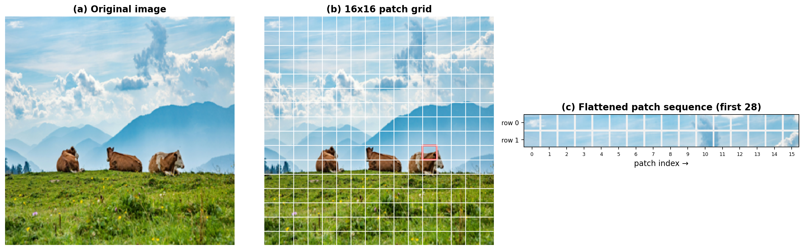
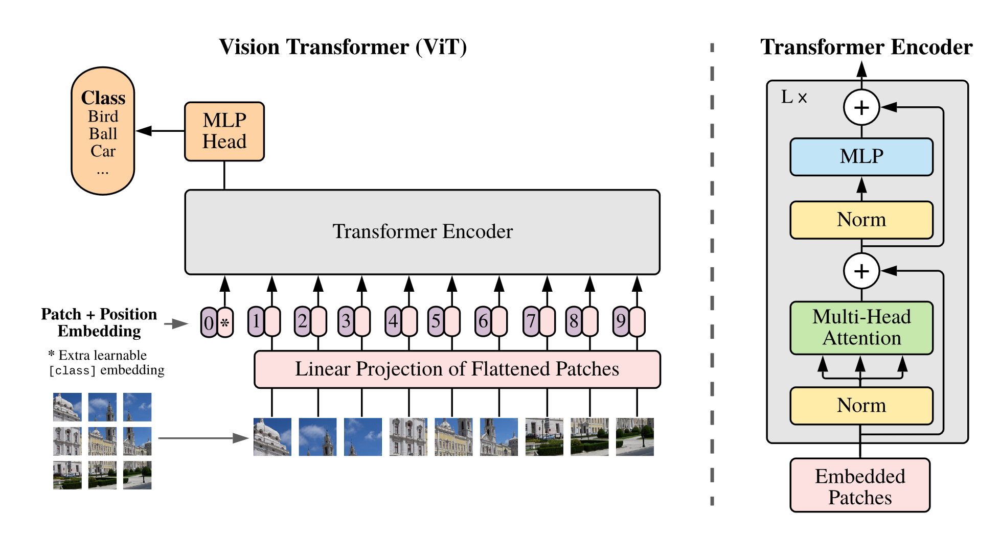
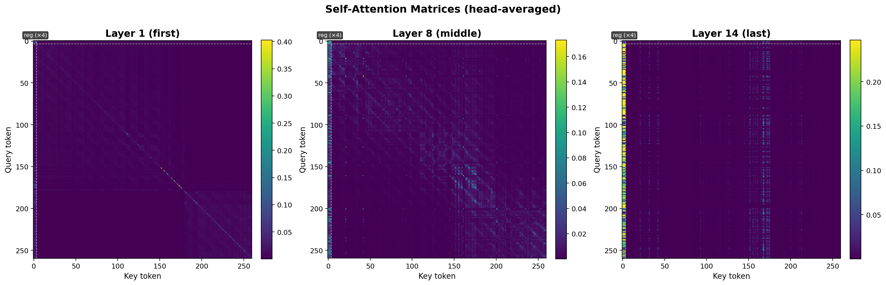
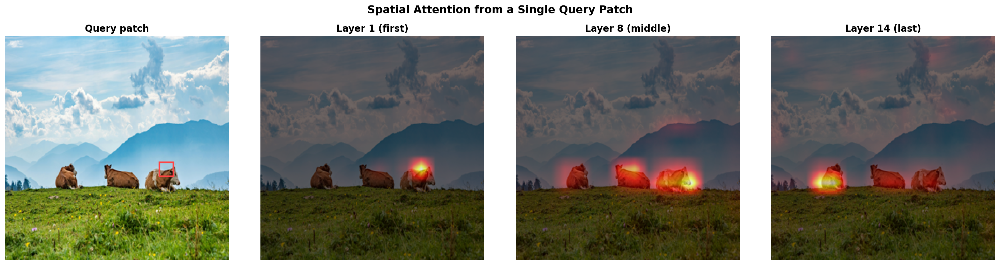

Modern Vision Backbones
CAS Deep Learning - Computer Vision (Part1)
Institute for Data Science I4DS, FHNW
Learning Objectives
- Adapt the transformer to images via patch embeddings
- Role of positional embeddings and the [CLS] token
- CNNs vs. ViTs — inductive biases, receptive fields, data efficiency
- Pick CNN, ViT, or hybrid based on data, compute, task
- Hybrid architectures: combining the two
Overview
- From Sequences to Patches
- Self-Attention on Patches
- CNNs vs. ViTs
- Practical Architecture Selection
Motivation
Transformers in Vision
Transformers dominate language — long-range dependencies, scale.
Can the same architecture work for images?
- CNNs: strong inductive biases (locality, translation equivariance)
- Transformers: minimal assumptions, treat input as a generic sequence
ViT (2020, Dosovitskiy et al. (2020)) — yes, with enough pretraining data.
From Sequences to Patches
The Trick: Treat Images as Patches
A 2-D image grid → a sequence of patches.
Patchifying

Figure 1: Split the image into fixed-size, non-overlapping patches.
\(224 \times 224\) image, \(16 \times 16\) patches → 196 patches.
The Patch Embedding Pipeline
- Divide image into a grid of patches
- Flatten each patch (\(16 \times 16 \times 3 = 768\))
- Project through a learnable linear layer → embedding of dim \(D\)
- Add positional embeddings — encode spatial position
- Prepend [CLS] token — image-level representation (à la BERT)
Result: a sequence of \(N + 1\) embeddings → standard transformer encoder.
ViT Architecture

Source: Dosovitskiy et al. (2020)
Quiz: Patch Size 32 × 32
What changes if patch size goes from 16 to 32?
- Number of patches: \(\frac{224}{32}^2 = \mathbf{49}\) — 4× fewer
- Faster — self-attention is quadratic in sequence length
- Less detail — each patch covers a larger area
- Trade-off — same as resolution choice in CNNs
Why Positional Embeddings?
Without them: a transformer treats patches as an unordered set.
A 2-D image grid would be lost.
Learned positional embeddings acquire 2-D structure during training: nearby patches end up with similar embeddings (Dosovitskiy et al. (2020)).
Self-Attention on Image Patches
Receptive Field — The Big Difference
CNN — local kernel → grows gradually with depth
ViT — every patch attends to every other patch from layer 1
ViT receptive field is global from the start.
Strength and Weakness
- ✅ Long-range dependencies for free (wheel ↔︎ road)
- ❌ No locality prior — must be learned from data
- ❌ Needs far more training examples
Quiz: Receptive Fields
A CNN with three 3×3 conv layers (stride 1) has a 7×7 receptive field.
A ViT with the same depth has a receptive field that covers…?
- 7×7 pixels
- The entire patch
- The entire image
3 — the entire image.
After even one transformer layer, every output has aggregated information from all patches.
What Attention Learns


CNNs vs. Vision Transformers
At a Glance
| Aspect | CNNs | ViTs |
|---|---|---|
| Inductive biases | Strong (locality, equivariance) | Minimal |
| Receptive field | Local → global | Global from layer 1 |
| Data efficiency | Good with small/medium | Needs large pretraining (10M+) |
| Scalability | Plateaus | Keeps improving with scale |
| Compute | Linear in spatial size | Quadratic in patches |
Inductive Biases — Help or Hindrance?
CNNs assume locality + translation equivariance — generally true for natural images.
ViTs assume nothing — must learn structure from data.
- Small data → CNNs win (priors are useful)
- Massive data → ViTs catch up and surpass
Quiz: When Locality Hurts
Where might CNN locality be a disadvantage?
- Scene classification — “kitchen” vs. “office” needs global arrangement
- Long-range relations — person holding a leash attached to a dog
- Non-local textures — patterns defined by distant regions
ViT’s global attention from layer 1 can shine here.
Practical Architecture Selection
Decision Guide
- Limited data + compute → pretrained CNN (ResNet, EfficientNet)
- Large data + compute → ViT or hybrid
- Global context early → ViT
- Edge deployment / fast inference → CNN or efficient hybrid
With massive pretraining, both perform similarly (Smith et al. (2023)).
Hybrid Architectures
Convs early (efficient local features) + Transformers late (global reasoning).
Examples: FastViT (Vasu et al. (2023)), EfficientViT.
Conversely: ConvNeXt modernizes ResNet with ViT-style training and design.
Loading Pretrained Models
timm — hundreds of pretrained models, both architectures.
What Actually Matters
- No conclusive winner with massive pretraining (Smith et al. (2023))
- Pretraining data + adaptation strategy often matter more than the backbone
- Hybrids increasingly common
The question of which architecture prevails — still open.
Beyond Classification — Multimodal ViTs
- BLIP-2 (Li et al. (2023)) — frozen ViT + LLM via Q-Former → visual QA
- Flamingo (Alayrac et al. (2022)) — few-shot multimodal across image-text sequences
The patch-embedding approach has become a universal interface between visual and language representations.
Summary
Key Takeaways
- ViTs treat images as sequences of patches — works with the standard transformer encoder
- Global receptive field from layer 1 — strength and weakness
- CNNs: strong priors, data-efficient · ViTs: flexible, scale-hungry
- Hybrids (FastViT, EfficientViT) combine the strengths
- Pretraining + adaptation strategy often matter more than the backbone